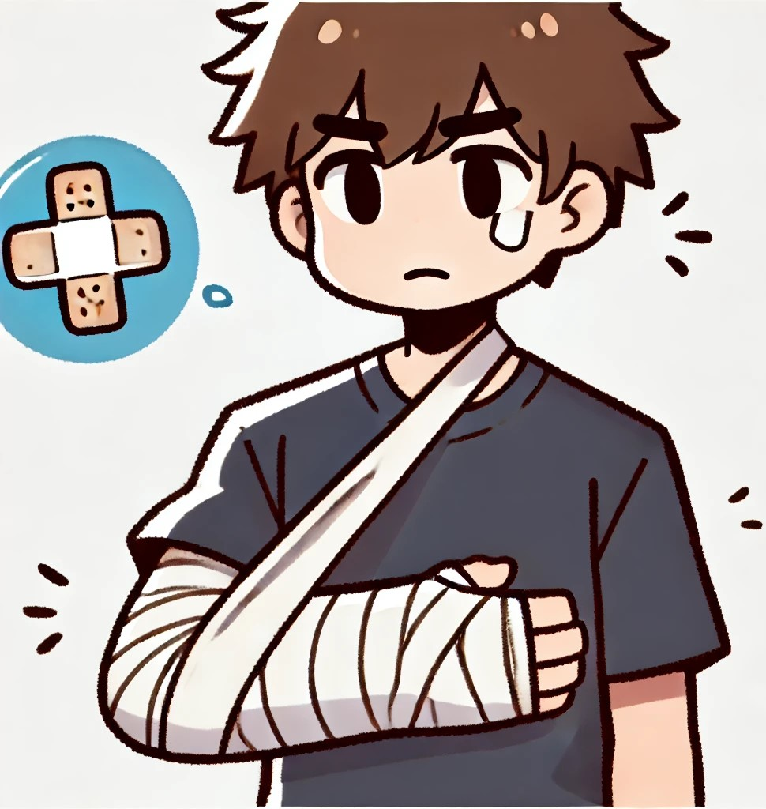

골절시 응급 처치 요령

골절 상황 발생시
먼저 119에 도움을 요청합니다. 이후 아래와 같이 응급처치를 실시합니다.
골절된 환부를 움직이지 않도록 부목이나 단단한 물체로 고정한다.
이때 부목은 환부의 위아래 관절까지 포함하여 고정한다.
출혈이 있으면 깨끗한 천으로 압박 지혈한다. 뼈가 돌출되었다면 억지로 밀어넣지 않는다.
이물질이 박혀있다면 절대 제거하지 말고 이물질 주위를 감싸 지혈한다.
부종 및 통증을 완화하기위해 냉찜질을 한다. 얼음이 피부에 직접 닿지 않게 천으로 감싸고
20분이상 적용하였다면 20분 이후에 다시 적용한다.